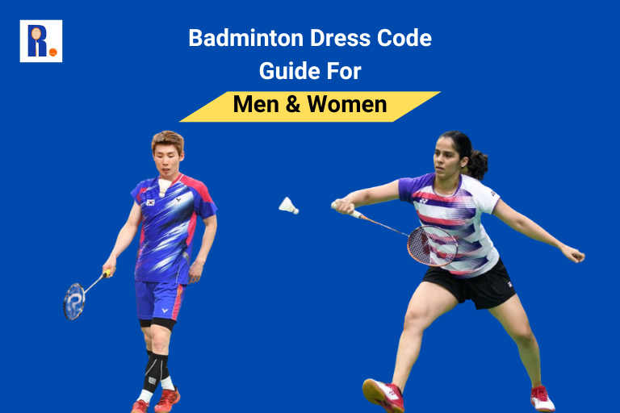

ShuttleNet is a website dedicated to providing comprehensive information about badminton, including its rules, skills, and gear. Whether you're a beginner looking to learn the basics or an experienced player seeking to enhance your skills, ShuttleNet has something for everyone.
Rules
Badminton is governed by a set of rules and regulations that ensure fairness and consistency in every match. These rules are established by the Badminton World Federation (BWF), an organization that covers everything from court dimensions and scoring systems to player conduct and equipment standards.
Skills
The mastery skills a badminton player possess, like serving, smashing, dropping, and footwork, define the playing style of that player. The Skills webpage will further elaborate on those skills and explain what scenario is best for it to be used in.
Gear
In our Gear section, it talks about the different equipment badminton players use during, before, or after a game. Learning about proper gear will allow you to have a deeper understanding of the sport and will encourage you to make investments that will boost your gameplay.
🏸Important Gear When Playing Badminton
1. Racket
The type of racket used between players is made from different materials. A badminton racket can either be power-based, all-rounder, or speed-based. These three categories depend on the player’s strategy and gameplay.
When selecting a proper racket, it is recommended to purchase it physically instead of through online purchasing. You can’t properly test a racket online unless you have external resources. If you test a racket physically, you can decide whether the properties of that racket suit your style.
Another important factor to consider when choosing a racket is its weight. Rackets can range from lightweight to heavy, and the weight can affect your swing speed and control. A lighter racket may be easier to maneuver, while a heavier racket can provide more power behind your shots.
You can further improve your racket by adding proper strings and grip. Comfortability is a priority when playing badminton. You should be properly suited to your racket. The strings can boost your smashing power and improve your net games. The type of grip you choose can help you better control your racket.
Types of Rackets
Type of Racket
Advantages
Disadvantages
Player Type
Balance Point on Racket
Power-based Rackets
More stable and extra solid hits & more shock absorption
More air resistance & less maneuverable
Players who prioritize Power
Over 300mm
All-rounder rackets
Has the advantages or disadvantages of a power-based and speed-based racket & you can add some adjustments that can partially increase the power/speed of the racket
Not the best in power nor speed
Equally offensive-defensive players
280-300mm
Speed-based rackets
Higher acceleration with a fast stroke & enables the chances of other types of moves where quick thinking is critical
Not suited for a long power-based rally
Players who prioritize speed
Below 288mm
2. Shuttlecock
The shuttlecock, also called ‘birdie’ is an important piece needed to play the game. Without a shuttlecock, there will not be any badminton games to begin with.
There are two main types of shuttlecocks, plastic or feather. However, there are personal preferences or game standards when choosing between the two. Plastic shuttlecocks are more preferred for beginners, while feather shuttlecocks are recommended for intermediate-expert level players.
Types of Shuttecocks
Type of Shuttlecock
Game Level
Price
Plastic Shuttlecocks
Beginners who are starting to learn how to play badminton
Developing basic skills needed for better games
Cheap and easy to produce
Feather Shuttlecocks
Usually required for advanced level tournaments
Requires proper technique in playing badminton if you want the shuttlecock to remain in good condition
Expensive and take a lot of time to mass produce
3. Shoes
The pair of shoes a badminton player wears is essential for better traction and movement across the court, enabling them to hit long shots.
The type of shoes is preferred to be lightweighted with extra cushioning to absorb the impact of jumping and lunging.
Jogging shoes are not recommended for badminton players as they usually lack the grip and traction needed to play badminton.
4. Attire
Not the most important gear on this list, but you have to wear something, obviously! The comfortability of your sports attire is highly prioritized over aesthetics.
Your shirt should be breathable, allowing air circulation throughout the upper body. The shorts should be within thigh to knee height because it allows your legs to stretch properly in order to receive the shuttlecock. The shorts shouldn’t also be too ‘sweat-absorbent’ because sweat builds weight in your shorts which will make it harder for you to move around the court.
Normal Badminton Outfits for Men and Women:

5. Apparels and Accessories
Beginners don’t really need expensive accessories when starting out. However, intermediate and advanced players are recommended to start selecting products that can improve their game play.
Here are some examples of important accessories that badminton players use:
Type of Equipment
Definition
Grip
Helps you hold your racket more. You will need a good grip in order to properly maneuver your racket when switching grip styles. A preferable option is towel grip as it absorbs the sweat you will get throughout the game. However, towel grips get a very foul odor if you don’t change it very often. Rubber grips are another type of grip that is commonly used. It doesn’t have a foul odor like the towel grip, but it is very comfortable and stable. You should always carry around another set of grips, so that you can quickly replace your grip as soon as the current set wears out.
Grip Powder
Sometimes, throughout your game, you might lose grip of your racket entirely, making it difficult to play, so grip powders are sometimes used along with grips to have a maximum grip on the racket, which might be good or bad depending on the playing style. However, if you don’t have a proper grip, you should still use grip powder instead so that your grip can still be firm and non-slippery.
Wristbands/headbands
Wristbands and headbands are used to absorb sweat from your arms and prevent it from dripping down to your hands. If you have sweaty hands or forehead, it will be harder for you to hold your racket or see the court clearly, so bands are a good investment if you have these problems.
Here's a video about the different types of Badminton Equipment essential for badminton: